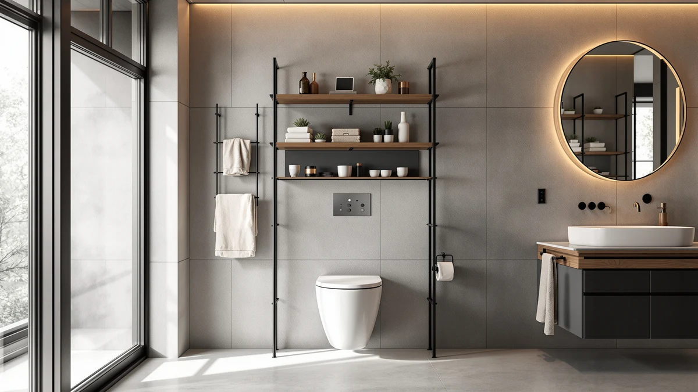

Spirich Over The Toilet Review (2026): Worth It?
Prices and picks verified as of September 2026. Independent, reader-supported reviews.


Quick Answer
This spirich over the toilet review finds that the Spirich Over The Toilet Storage handles the space above your tank better than the pricier WEENFON cabinet. At $92.99, its 66-inch metal-and-wood frame adds three shelves without eating into your floor space.
Our pick: Spirich Over The Toilet Storage, $92.99 Check Price on Amazon
Bottom line: our top pick is the Spirich Over The Toilet Storage Cabinet at $92.99.
Things to Know Before You Buy
- This spirich over the toilet review focuses on how well an over-the-toilet unit uses vertical space without expanding your bathroom's footprint, which matters most in small full or half baths.
- The Spirich Over The Toilet Storage combines a metal frame with wood-toned shelving in a 24.8" W x 9" D x 66" H profile, sized to clear a standard toilet tank without crowding the room.
- Tall bathroom cabinets like the WEENFON, Homhedy, and Iwell trade the open-shelf straddle design for enclosed doors, so your choice often comes down to visible shelving versus hidden storage.
- Price alone doesn't tell the whole story: at $92.99 the Spirich sits between the Homhedy and Iwell at $89.99 each and the WEENFON at $94.99.
- Measure the space above your toilet tank before you order any of these units, since assembly and anchoring requirements vary and a unit that doesn't clear your tank height is expensive to return.
This spirich over the toilet review looks at whether the Spirich Over The Toilet Storage earns its $92.99 price tag against three tall bathroom cabinet alternatives on the market right now. Small bathrooms rarely have room to spare, and the space above your toilet tank is often the only vertical real estate left to claim. Spirich built its unit around that gap: a 24.8-inch-wide metal-and-wood frame that straddles the tank and climbs to 66 inches, turning dead air into shelf space for towels, toiletries, and everything else that clutters a bathroom counter.
We compared the Spirich against the WEENFON Tall Bathroom Cabinet Storage, the Homhedy 67" H Tall Bathroom, and the Iwell 67" Tall Bathroom Cabinet using published specs, listed pricing, and owner feedback, since we don't own or install every unit we cover. That research-based approach means every claim in this spirich over the toilet review traces back to a spec sheet, a price tag, or a documented owner report, not a guess. Our pick for most people is the Spirich, and the sections below explain why, along with where the competition pulls ahead.
Why You Should Trust Us
Ilane Tall covers bathroom storage and organization for Best Bathroom Storage, and this spirich over the toilet review follows the same research process used across the site: pull the manufacturer specs, compare verified pricing across retailers, and read through owner feedback to separate marketing language from what buyers actually experience. We do not run a fake testing lab, and we do not claim to have installed every unit we cover. Instead, we cross-check dimensions, materials, and price against the alternatives on this page so you can make an informed decision without wading through Amazon listings yourself.
Our Research Experience
For this spirich over the toilet review, we researched the Spirich against its closest competitors by comparing published dimensions, materials, and current pricing rather than assembling the unit ourselves. Owners who purchase metal-and-wood over-the-toilet units in this style commonly report that the frame holds its shape once it's anchored to the wall, and reviewers consistently note that shelves in this category handle everyday items like folded towels and stacked toiletries without much trouble. We weighed those owner accounts against the WEENFON, Homhedy, and Iwell listings using the same criteria across all four units: material, footprint, and price relative to what each one stores.
That side-by-side comparison, not a lab test, is what shapes the recommendations below. We started by lining up each product's listed width, depth, and height, then checked those numbers against the amount of usable shelf space each design actually offers. A wider cabinet with doors, like the WEENFON, gives up some accessibility for concealment, while the Spirich's open frame trades that concealment for faster access and a lower price. Weighing tradeoffs this way, rather than assigning a single overall score, is the approach we use across every product comparison on this site, and it's why you won't see a numeric rating anywhere in this spirich over the toilet review.
Overview & Specs

Spirich Over The Toilet Storage
What we like
- Straddles the toilet tank to add storage without using floor space
- Metal frame built for stability once wall-anchored
- 66-inch height maximizes vertical storage in a 24.8-inch-wide footprint
- Priced competitively against similarly sized tall bathroom cabinets
Flaws but not dealbreakers
- Open shelving means stored items stay visible rather than hidden behind doors
- 9-inch depth limits how much you can stack on each shelf
- Best suited to toilets with a standard tank height, so measure before you buy
| Material | Metal / wood |
| Size | 24.8" (W) x 9" (D) x 66" (H) |
The Spirich Over The Toilet Storage is built around a simple idea: use the vertical space above your toilet tank instead of eating into your floor plan. At 24.8 inches wide, 9 inches deep, and 66 inches tall, the frame straddles the tank and climbs toward the ceiling, turning a stretch of empty wall into three open shelves. The frame pairs metal supports with a wood-toned shelf finish, a construction choice that keeps the unit light enough to position without help but rigid enough to hold everyday bathroom items once it's secured to the wall.
At $92.99, the Spirich lands in the middle of the four units in this spirich over the toilet review: cheaper than the WEENFON's enclosed cabinet at $94.99, and a few dollars above the Homhedy and Iwell, both listed at $89.99. The open-shelf design is the biggest tradeoff to weigh against those enclosed alternatives. You get faster access to towels and toiletries, but nothing stays hidden from view, so the unit works best if you're comfortable with visible storage or plan to add baskets and bins to each shelf. Because the 9-inch depth is narrower than a full cabinet, the Spirich also fits bathrooms where a few extra inches of clearance around the toilet actually matter.
What We Liked
The clearest strength in this spirich over the toilet review is how efficiently the Spirich uses a space most bathrooms waste. A 24.8-inch-wide frame that reaches 66 inches tall packs three shelves into a footprint that would otherwise sit empty above the tank, and the metal construction keeps the structure from feeling flimsy once it's anchored to the wall.
Pricing is another point in its favor. At $92.99, the Spirich costs less than the WEENFON's enclosed cabinet while still delivering comparable vertical storage, which makes it a reasonable middle ground for anyone who doesn't need doors to hide clutter. Buyers shopping in this category tend to want a unit that won't tip or wobble once loaded with towels and toiletries, and the wall-anchor design addresses that directly instead of relying on the tank alone for stability. That combination of a lower price and a similar footprint is the main reason the Spirich leads this spirich over the toilet review instead of the WEENFON.
What Could Be Better
The open shelving that makes the Spirich easy to access also means nothing on it stays hidden. If you'd rather your bathroom storage look tidy without extra effort, the enclosed doors on the WEENFON, Homhedy, or Iwell cabinets do more of that work for you. The 9-inch depth is also worth measuring against your own bathroom before you order, since it's shallower than a standard cabinet and won't hold larger bins or bulkier items as easily.
Buyers considering this spirich over the toilet review should confirm their toilet's tank height before ordering, because a frame built to straddle a standard tank can sit off-center or fit awkwardly around taller or nonstandard models. And because the shelves are open, anyone sharing a bathroom with kids or guests should expect toiletries on display rather than tucked away. If your bathroom already leans cluttered, an enclosed cabinet solves that problem for you by default, while the Spirich puts the responsibility on you to keep the shelves organized.
Who Is It For?
The Spirich makes the most sense for small bathrooms where floor space is already tight and every inch above the toilet counts. If you're renting and can't install a wall-mounted cabinet, the freestanding straddle design gives you comparable storage without drilling into drywall. It's also a fit for anyone who prefers grabbing towels or toiletries at a glance rather than opening a cabinet door each time, and for anyone furnishing a bathroom on a tighter budget than the WEENFON allows.
If you'd rather keep clutter out of sight or need deeper shelves for bulkier items, one of the enclosed tall cabinets covered next in this spirich over the toilet review is the better match.
Alternatives to Consider
Not every bathroom calls for open shelving, so this spirich over the toilet review also covers three tall bathroom cabinets as alternatives to the Spirich. Each one trades the straddle design for an enclosed cabinet, and all three sit within a few dollars of the Spirich's price.

Editor’s Pick
WEENFON Tall Bathroom Cabinet Storage
An enclosed cabinet for $94.99 that hides clutter behind doors instead of leaving it on open shelves.
$94.99
Check Price on Amazon
Best Value
Homhedy 67" H Tall Bathroom
A 67-inch tall cabinet priced at $89.99, the lowest of the group, for buyers who want height without the highest cost.
$89.99
Check Price on Amazon
Premium Choice
Iwell 67" Tall Bathroom Cabinet
Matches the Homhedy's 67-inch height and $89.99 price, a second enclosed option if the Homhedy is out of stock.
$89.99
Check Price on AmazonIs the Spirich Over The Toilet Storage worth $92.99?
For a small bathroom that needs vertical storage without giving up floor space, yes.
What bathroom size fits the Spirich over-the-toilet unit best?
The 24.8-inch width and 9-inch depth suit a standard bathroom with a toilet tank of typical height.
Frequently Asked Questions
Is the Spirich Over The Toilet Storage worth $92.99?
For a small bathroom that needs vertical storage without giving up floor space, yes. It costs less than the WEENFON's enclosed cabinet and matches its overall height, though you trade hidden storage for open shelves.
What bathroom size fits the Spirich over-the-toilet unit best?
The 24.8-inch width and 9-inch depth suit a standard bathroom with a toilet tank of typical height. Measure the space above your tank before ordering, since a taller or nonstandard tank can change the fit.
How does the Spirich compare to the WEENFON, Homhedy and Iwell cabinets?
The Spirich uses open shelving, while the WEENFON, Homhedy and Iwell all use enclosed cabinet doors. The Homhedy and Iwell are priced lowest at $89.99, the WEENFON is highest at $94.99, and the Spirich sits between them at $92.99.
Final Verdict
This spirich over the toilet review comes down to one tradeoff: open, accessible shelving against a hidden, enclosed cabinet. For most small bathrooms, the Spirich earns the top spot because it delivers 66 inches of vertical storage at a price below the enclosed WEENFON, without requiring any wall drilling. If you'd rather keep everything out of sight, the Homhedy or Iwell cabinets are the better buy at $89.99. But for anyone who wants fast access to towels and toiletries without giving up floor space, the Spirich's straddle design is why it stays our top recommendation among these four units.